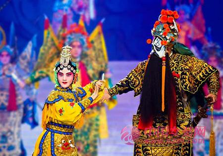
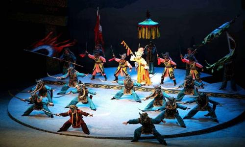
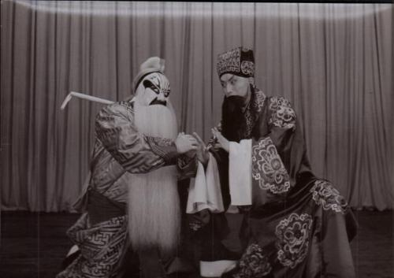
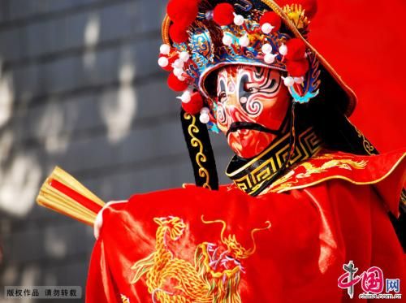

----中国戏曲文化-----
中国戏曲主要是由民间歌舞、说唱和滑稽戏三种不同艺术形式综合而成。它起源于原始歌舞，是一种历史悠久的综合舞台艺术样式。经过汉、唐到宋、金才形成比较完整的戏曲艺术，它由文学、音乐、舞蹈、美术、武术、杂技以及表演艺术综合而成，约有三百六十多个种类。它的特点是将众多艺术形式以一种标准聚合在一起，在共同具有的性质中体现其各自的个性。 中国的戏曲与希腊悲剧和喜剧、印度梵剧并称为世界三大古老的戏剧文化，经过长期的发展演变，逐步形成了以“京剧、越剧、黄梅戏、评剧、豫剧”五大戏曲剧种为核心的中华戏曲百花苑。
中国戏曲是以唱、念、做、打的综合表演为中心的戏剧形式，它有丰
富的艺术表现手段，它与表演艺术紧密结合的综合性，使中国戏曲富有特
殊的魅力。它把曲词、音乐、美术、表演的美熔铸为一，用节奏统驭在一
个戏里，达到和谐的统一，充分调动了各种艺术手段的感染力，形成中国
独有的节奏鲜明的表演艺术。

综合性、虚拟性、程式性，是中国戏曲的主要艺术特征。这些特征，凝聚着中国传统文化的美学思想精髓，构成了独特的戏剧观，使中国戏曲在世界戏曲文化的大舞台上闪耀着它的独特的艺术光辉。
主要类型：
生：
是戏曲表演行当的主要类型之一。扮演男性人物。生的名目初见于宋元南
戏，泛指剧中男主角。历代戏曲都有这一行当，近代各地戏曲剧种根据所扮演人物年
龄、身份的不同，又划分为老生、小生、武生等分支，表演上各有特点。老生生行的
一个分支。因多挂髯口(胡须)又名须生。扮演中年或老年男子，多为性格正直刚毅
旦：
戏曲表演行当的主要类型之一，女角色之统称。早在宋杂剧时已有“装旦”
这一角色。宋元南戏和北杂剧形成后仍沿用旦的名称，运用上又略有不同。昆山腔成
熟期，形成正旦、小旦、贴旦、老旦四个分支。其后各剧种又繁衍出众多分支。近代
戏曲旦角根据所扮演人物年龄、性格、身份的不同，大致划分为正旦(青衣)、花旦、
武旦、老旦、彩旦等专行，表演上各有特点。
净：戏曲表演行当的主要类型之一，俗称花脸。以面部化妆运用各种色彩和图
案勾勒脸谱为突出标志，扮演性格、气质、相貌上有特异之点的男性角色。或粗犷豪
迈，或刚烈耿直，或阴险毒辣，或鲁莽诚朴。演唱声音洪亮宽阔，动作大开大阖、顿
挫鲜明，为戏曲舞台上风格独特的性格造型。据说此行当是从宋杂剧副净演变而来。
“花部”兴起后，净扮演人物范围不断扩大。净行根据角色性格、身份的不同，划分
为若干专行，表演上各有特点。
丑：
戏曲表演行当主要类型之一，喜剧角色。由于面部化妆用白粉在鼻梁眼
窝间勾画小块脸谱，又叫小花脸。宋元南戏至今各戏曲剧种都有此脚色行当。扮演人
物种类繁多，有的心地善良，幽默滑稽;有的奸诈刁恶，悭吝卑鄙。近代戏曲中，丑
的表演艺术有了长足的发展，不同的剧种都有各自的风格特色。丑的表演一般不重唱
工而以念白的口齿清楚、清脆流利为主。相对地说，丑的表演程式不像其他行当那样
严谨，但有自己的风格和规范，如屈膝、蹲裆、踮脚、耸肩等都是丑的基本动作。按
扮演人物的身份、性格和技术特点，大致可分为文丑和武丑两大支系，表演上各有特点。


